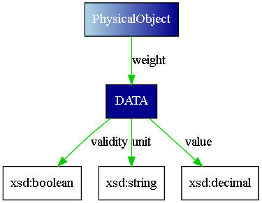
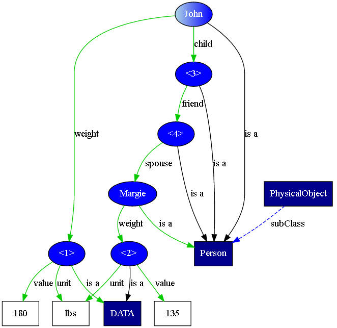

It is often the case in natural language that we use the name of a class to represent an instance of the class. Usually a preceding article indicates whether we are referring to a specific instance or to any instance. Consider, for example, the sentence "George is playing under the tree." The phrase "the tree" indicates a particular instance of the "tree" class. Which instance is presumably clear from context. By contrast, consider the sentence "Plan for the future--plant a tree." Here "a tree" indicates some unidentified member of the "tree" class.
As an extension of this kind of construct, it is also the case in natural language that class names are sometimes used as proxies for a particular value of an instance of the class. This is particularly the case when the existence of a class in the formal model is required in order to give additional information about a data value. In OWL a data value does not have identity and so cannot be the subject of a triple (statement), so an instance of a class is created to allow the additional information to be associated with the data value. For example, measurements often have not only a numeric value but also a unit. Below is part of a simple ontology capturing a conceptualization of measurement. It is expressed in the Semantic Application Design Language (SADL), which is a controlled-English representation that seeks to make semantic models more easily understood and authored by subject matter experts.
is a class, must be one of {SystemInternationale (alias "SI"), ImperialUnits, US_CustomaryUnits}.MeasurementSystem
Using the above model, given the task of measuring a football field, on might say "The Measurement is 300". Someone might respond to this assertion by saying, "Oh, then the Measurement is in feet." To be consistent with the model, the first should have said, "The value of the instance of Measurement is 300" and the second "The unit of the instance of Measurement is Foot". The problem to be solved by implied properties is to allow a model builder to say things using just class or instance names rather having to say things in a complete, model-consistent way. This makes the expressions more natural, which is the objective of SADL. In fact, this capability has been demanded by users of the language.
The SADL grammar supports the syntax of comparing a class or instance of a class to a value, including a value which is a number or a string. However, type checking by the validation function will identify such a comparison when the two sides of the comparison are not the same type as an error. And even if validation didn't complain, translators will generate output that cannot be processed or is unexpected. Both validators and translators must be aware of any special handling of the class or instance comparison with the value. This can be accomplished by designating "implied properties" on a class. This is done with an annotation property for two reasons. First, OWL DL, our target maximally expressive flavor of OWL, does not allow statements with user-defined OWL object properties to have classes as subjects or properties as values. But even if it did, we do not want reasoners trying to use the statements we make about implied properties. These are only for the validator and translator to use in their processes. Annotation properties are normally ignored by reasoners, as we would want this to be.
Therefore we add the following to our example model. (The definition of "impliedProperty" is shown here, but would not actually be part of the user model but is part of the SADL pre-defined, implicitly included concepts in SadlImplicitModel.sadl.)
impliedProperty
is a type of annotation.When a validator or reasoner sees an apparent type conflict, e.g. comparing an instance of Measurement to an incompatible value, e.g., a number, it will look for implied properties associated with the class specified, or the class to which a specified instance belongs. If there is an implied property whose range is compatible with the value in the comparison, it will insert that value to create a "property of" construct, e.g., "value of Measurement", "unit of Measurement".
Clearly a class cannot have more than one implied property with a given range or ambiguity results. Even specifying two properties as implied if their ranges that are close, e.g., decimal and float, may be less reliable in practice as the values would have to be specified carefully to make sure they match the desired property even though the value would work with the other property.
As an alternative way of understanding implied properties, consider them from a graph model perspective. In the domain model (AKA t-box), we define classes, properties, and property domain and range classes. Suppose, for example, that we define the following, shown in SADL syntax.
DATA is a class,
Thus the properties value, validity, and unit all have domain DATA and ranges xsd:decimal, xsd:boolean, and xsd:string, respectively. The property weight has domain PhysicalObject and range DATA. As a visual graph, the domain model looks like this.

To complete the picture, consider a small amount of instance data for the domain.
MonaLisa is a PhysicalObject with weight (a DATA with ^value 200, with unit "lbs", with validity true).
Viewed as a graph, it looks like this.
The "<1>" in the graph signifies a blank node, given the identifier "<1>" to distinguish it from other blank nodes in the graph. Now suppose that I want to query my triple store. I might ask
weight
of MonaLisa (in SPARQL, namespaces omitted, "select ?w where {<MonaLisa> <weight> ?w}")
This query would return the blank node designated "<1>" in the graph. Using Jena, the result is "w = -1f420ac5:15b49f44305:-5089(blank node)". Hardly what a naive user would expect.
Now let us use implied properties. I add to my domain model the following.
DATA has impliedProperty value.
DATA has impliedProperty unit.
DATA has impliedProperty validity.
Now if I ask the same question the answer will be "w->value = 200, w -> unit = "lbs", w -> validity = true".
In natural language we are not limited to a single triple statement (subject, predicate, object) per sentence, but we often create chains of relationships. Consider this snippet of OWL data (in which "validity" is dropped for simlicity).
Margie
is a Person with weight (a DATA with value 135, with unit "lbs").
John is a Person with weight (a DATA with value 180, with unit "lbs").
John has child (a Person with friend (a Person with spouse Margie)).
Shown as a visual graph, this data looks like this. There are two unnamed instance nodes of type Person in the property chain connecting John and Margie.

Consider these two statements.
Ask
Ask
The first query looks for a pattern with a "forward" property chain from an unbound variable "p" to the instance node "Margie". The second query looks for a pattern with a "backward" property chain from an unbound variable "q" to the instance node "John". Given the example data set, the first query will return a single possible binding for "p = John", the second the single possible binding "q = Margie".
Now suppose that we modify the second query above slightly
Since the range of "weight" is "DATA", and "DATA" cannot be compared ("<") the number 150, we again would look for an implied property to make sense of the query and we find one in "value". Therefore the translated query is
or in SPARQL it is
where variable "x" corresponds to node "<3>" in the graph, "y" corresponds to node "<4>", "z" will be bound to "Margie", "w corresponds with node "<2>", and "wv" will be bound to "135".
The applicability of impliedProperties goes beyond querying. For example, in a rule premise one might wish to compare two objects, "weight of X = weight of Y". (Other rule premise conditions would bind variables X and Y, e.g., a binding might be "weight of MonaLisa = weight of JohnDoe." This comparison would return true only if all three of these statements were true.
- value of weight of MonaLisa = value of weight of JohnDoe
- unit of weight of MonaLisa = unit of weight of JohnDoe
- validity of weight of MonaLisa = validity of weight of JohnDoe